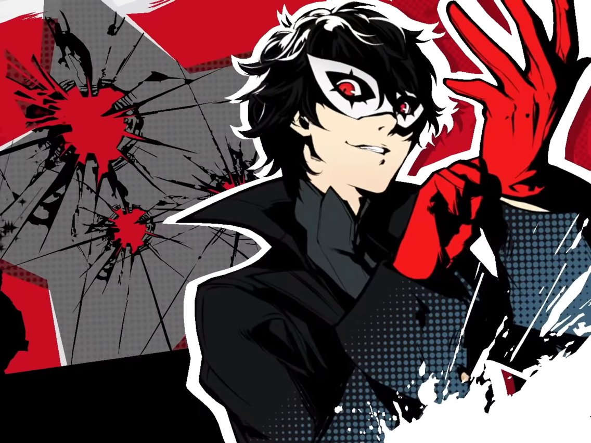
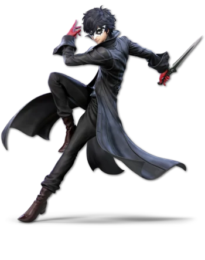

unused files + explanations
Used in javascript tests when trying to change ron's picture into this one
Used as placeholder when completing archives. Song is from the main menu of Persona 5.
Originally going to be used as ron picture change but computer wouldn't recognize png
The reason joker is used so much is because he's my favorite video game character and its more fun than getting pictures of a flower or something
This site was built by Eli Rainey, Ashton Thomas, and Desmond. By that I mean Eli did all the work while the others helped with like two lines of code.